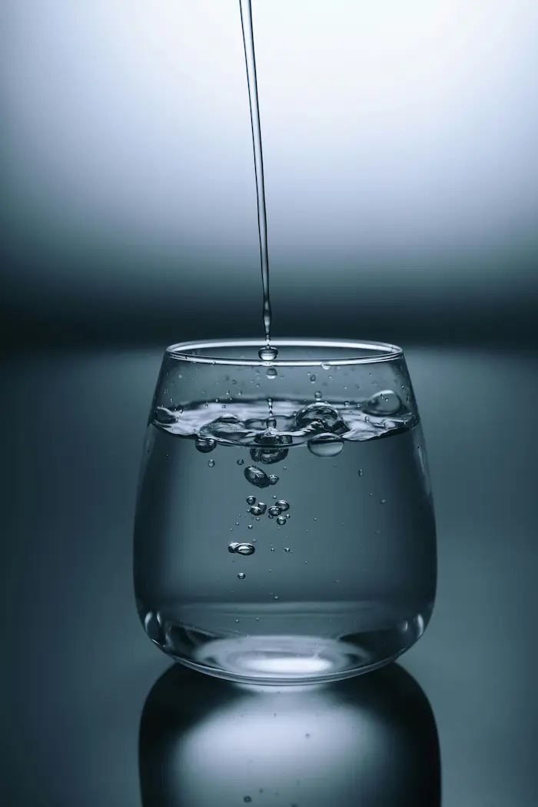

Start Your Day Right
Drink a glass of water first thing in the morning to kickstart your hydration.
Drink a glass of water first thing in the morning to kickstart your hydration.
Use our tracker to set reminders throughout your day to drink water regularly.
Foods like cucumbers, watermelon, and oranges can contribute to your daily water intake.